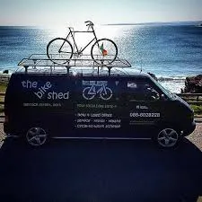
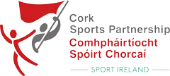

Cycling
Getting started on your car-free journey
-
Get the necessary equipment
The Bike Shed, Cork
The Bike Shed set up in a shipping container in 2011 and has grown steadily since. We are now in our fifth premises. The original idea was to save bikes from landfill centers and get them back on the road. We have gone from there to providing top quality service in bike sales, repair, service and hire.
Click here to go to The Bike Shed's website -
Learn to cycle
Cork Sports partnership
Cork Local Sports Partnership CLG was established as part of a national network of 29 Local Sports Partnerships targeted to help people to get active and removes barriers to participation in sport and physical activity for all.
Click here to go to the Cork Sports partnership's website -
Join a Meetup Group

The Rebel Pedals
They have a very friendly team of Event Organizers/Hosts who work well together. They organise 4 types of events: 'Roadrunners' - chasing personal bests even KOM's, love long distance hilly tours. 'Alpacas' - mid pace improvers, 21km/hr average with a few 40k's under belt and ready for tackling 80k+. Leisure cycles - come one come all. No clock watching here but might bring a picnic to share (typically 25k, mostly flat). Once off events - Mountain biking, sportives, hillwalking and social events.
Click here to go to the The Rebel Pedals Group on Meetup